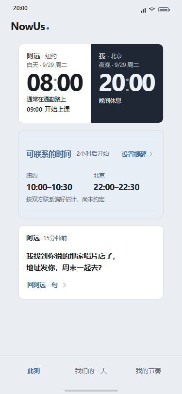

A · 第120轮（继续正式采用）

GPT-6.1 Sol 独立比较选择现有版：短留言集中排列，用户确认共同时间后能直接阅读与回复。候选扩大了白卡，但没有增加清晰度。
打开正式原型 · 本轮完整记录 · 评论员原文 · 整批论点
新批次 2026-10-03-b：已评1/5轮，本次只执行用户要求的一轮，未自动开始第122轮。无分数；当前比较来源为GPT-6.1 Sol，旧来源保持不变。
正式版仍是原有32px回复触控高度；44px改善随B候选一并未采用。日／节奏视图对比度、旧favicon、导航上方空白仍是已记录的问题。功能验证与本轮局部比较不代表整体设计目标已经达到。